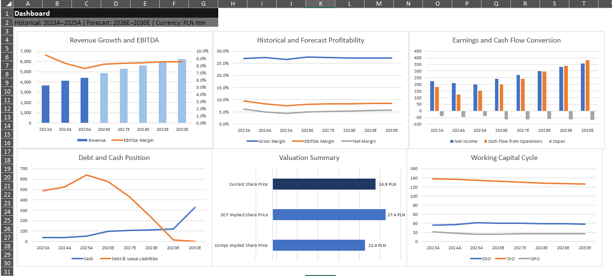
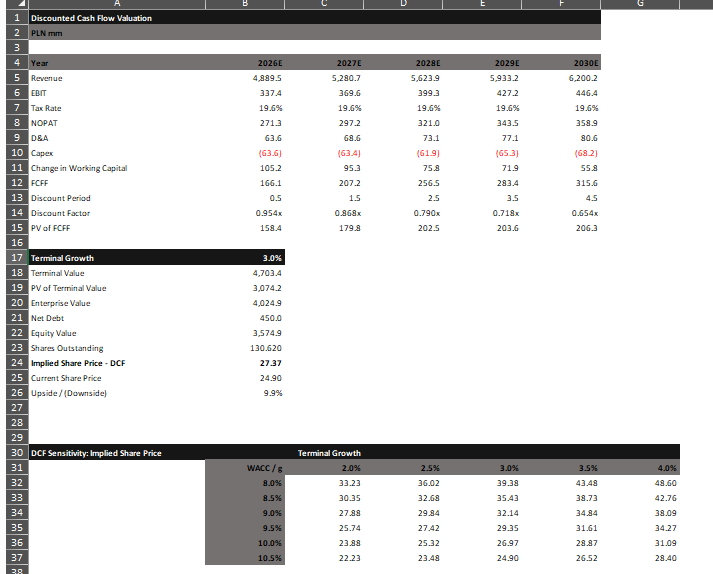
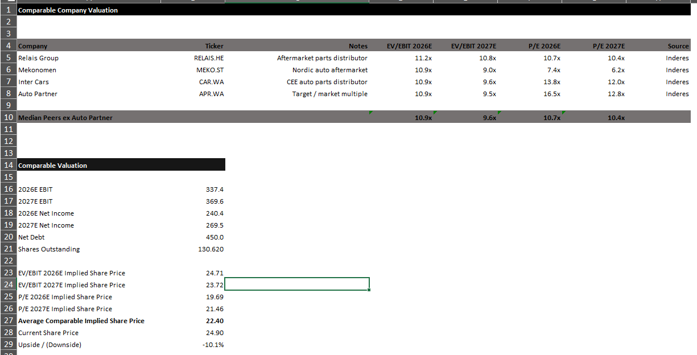

Equity research case study
Auto Partner S.A. — three-statement model & valuation.
An integrated model covering historical financials, operating assumptions, a 2026–2030 forecast and two valuation frameworks.
The objective was to build an auditable model that links the investment thesis to revenue, margin, working-capital and capital-structure assumptions.

01 · Approach
From source documents to a linked forecast.
The model was built around a clear flow: historical financial statements, operating assumptions, integrated statements, free cash flow and valuation.
Core components
- Historical income statement, balance sheet and cash flow statement.
- Revenue, margin, capex, depreciation and working-capital assumptions.
- Integrated 2026–2030 forecast with debt repayment and cash build.
- FCFF-based DCF using a mid-year convention and terminal growth.
- Comparable valuation using EV/EBIT and P/E multiples.
- Balance-sheet, cash-flow and valuation sanity checks.
02 · Results
A mixed valuation supports a neutral stance.
The DCF indicated moderate upside, while trading multiples suggested downside. The disagreement between methods was treated as information rather than averaged away without explanation.
Educational portfolio project. The analysis is not investment advice and uses assumptions that should be updated with new company and market data.
Model outputs
Valuation detail
The model presents the DCF mechanics, sensitivity table and a peer-based cross-check in separate, auditable worksheets.


03 · What it demonstrates
Skills evidenced by the project.
- Understanding of three-statement links and cash-flow mechanics.
- Ability to translate a business thesis into forecast assumptions.
- Practical DCF, WACC, terminal value and sensitivity analysis.
- Comparable-company methodology and enterprise-to-equity bridge.
- Model documentation, source tracking and error checks.
- Clear presentation of conclusions and conflicting valuation signals.